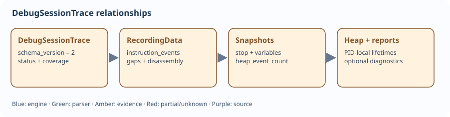

40 · DebugSessionTrace · the recorded data model #
Key terms #
| Term | Plain meaning |
|---|---|
| Snapshot | One saved view at a debugger pause: where the program stopped, what variables were read, and what heap blocks were observed. |
| Optional field | A value that can be missing because the tool did not record or could not establish it; missing is not automatically false. |
>
Level 1 · Intuition #
A trace is not a video of a program. It is a set of timestamped/stopped observations, bounded attempts and gaps, heap telemetry, optional static metadata and diagnostics. Links between them use different identity domains. Preserving absent evidence is just as important as preserving a successful read.


Level 2 · Record relationships #
Picture the JSON as a notebook with several sections written at different times. In Rust, DebugSessionTrace holds the notebook; RecordingData is folded into the top-level JSON, so Rust's recording.instruction_events appears as JSON's instruction_events. Each source_checkpoints entry points to a saved snapshot by array position, not by including a second snapshot copy. disassembly_table is a dictionary of instructions; a saved instruction event refers to a dictionary entry by instruction_id. Running the same instruction three times still gives three separate events. trace_gaps mark intervals without exact captured events. Heap events list observed operations in time order; allocation_lifetimes describe a block's start and end; heap_state describes saved block state. They answer different questions. Instruction coverage, heap heap_history, journal storage and the outcomes in stage_results can be complete or partial independently.
Events, gaps and checkpoints #
snapshots[i].step_index=i: captured checkpoint position.snapshots[i].observation.stop_id: processed debugger stop counter; may have holes.instruction_position: number of attempts preceding it.instruction_events[j].event_id: ordered attempted instruction ID; optionalcheckpoint_idreferences a recent snapshot, not an exact temporal join.stop_id_before/afterrefer to debugger observations.trace_gaps[k].instruction_positionis a boundary where instructions were not captured; its unknown instruction count is never guessed.
Variables, bytes and heap #
VariableInfo.read_status, bytes_status and memory_evidence describe distinct observations. Pointer address is storage and points_to is the pointee. HeapEvent.sequence is per-PID, not event-vector position. HeapBlockInfo.observed_at_stop timestamps heap byte reads; a freed final block may retain historical bytes. AllocationLifetime has an allocation sequence and optional free sequence; a successful realloc can link old and new lifetime IDs. The schema does not create pointer origin from address equality.
Level 3 · Actual schema excerpt and paths #
// Reduced field excerpt from src/models.rs; other fields omitted.
pub struct DebugSessionTrace {
pub schema_version: u32,
pub snapshots: Vec<ExecutionSnapshot>,
pub heap_events: Vec<HeapEvent>,
pub heap_state: Vec<HeapBlockInfo>,
pub execution_status: ExecutionStatus,
pub stage_results: StageResults,
// #[serde(flatten)] pub recording: RecordingData,
}Illustrative reduced excerpt, not a copy/paste Rust definition or complete JSON: DebugSessionTrace also contains typed execution_limits, execution, compilation results, optional metadata and reports, usage and notes. For the actual declaration, see src/models.rs::DebugSessionTrace and schema reference.
{"schema_version":2,"execution_status":"step_limit_reached","instruction_count":203,"coverage":{"scope":"user_code","complete_for_scope":false,"truncation_reasons":["max_steps"]}}This is an illustrative partial JSON projection: no unspecified keys are implied, and a real trace's truncation-reason list may include additional causes. The importer requires the full model, not this excerpt. schema_version is 2 for supported V2.1/V2.2 documents; a missing marker defaults to 2, but unknown old execution_limits fields can still make pre-V2.1 files fail to deserialize. See TP-1 compatibility.